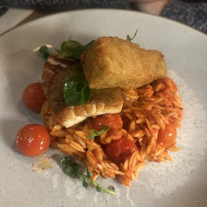

Cancel
Add a meal
Thu 15 Oct
Missed one? Let's add it to
Thursday 15 October
.
What did you eat?
Take a photo
Snap it now. It goes straight to this day.
Choose from library
Photos from that day show up first.
Add without a photo
From your library on
Thu 15 Oct
Not in your calendar yet. Tap one to add it.
+
+
+

+